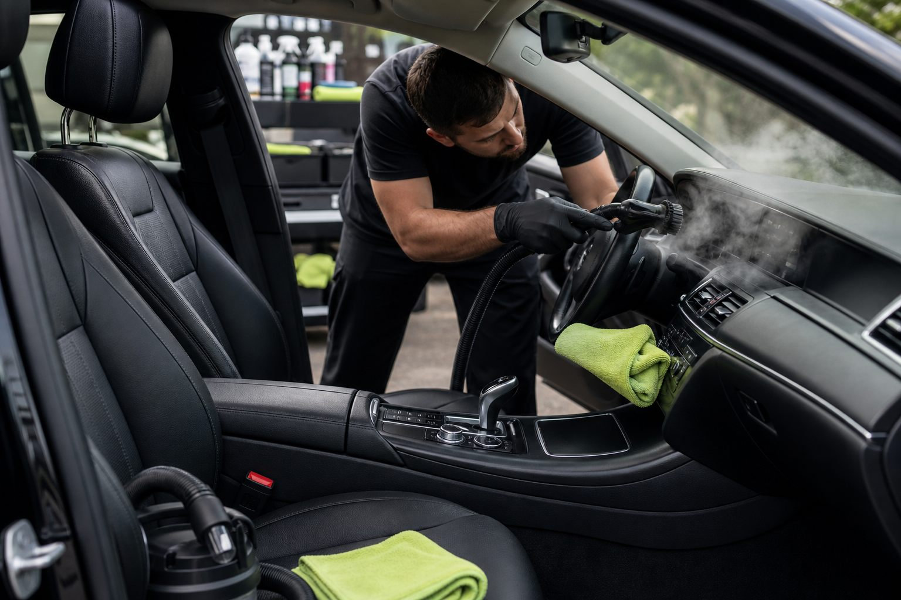

Auto detailing services
Interior and Exterior Detailing
A full mobile detail for daily drivers, family vehicles, and cars that need a serious reset. We clean exterior surfaces, wheels, tires, glass, trim, carpets, seats, vents, touch points, and interior glass so the vehicle feels fresh inside and out.